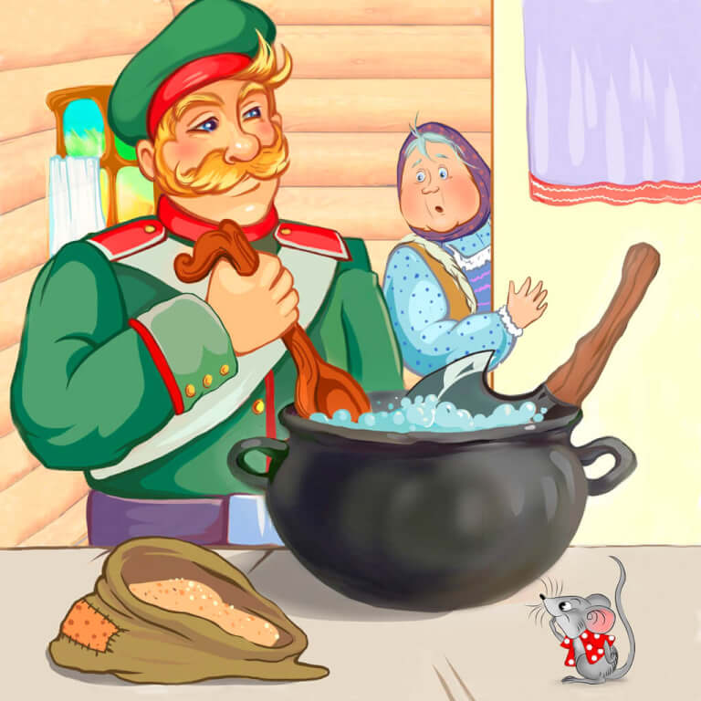

Шёл солдат с похода, день-другой идёт, притомился, проголодался.
Солдат идёт по дороге
Видит избушка стоит. Зашёл, а там бабушка сидит возле печи, старенькая-престаренькая.
— Здравствуй, бабушка! Дай мне чего-нибудь поесть! — говорит солдат.
— Ох, сынок, да вон там на гвоздике повесь! — отвечает старуха.
— Ты что же это, совсем глуха, не чуешь?
— Где хочешь, там и заночуешь.
— Ах ты хитрая какая! Подавай на стол! — кричит солдат.
— Да нечего, родимый!
Солдат и старушка
— Вари кашу!
— Да не из чего, родимый!
— Давай топор; я из топора сварю!
— Что за диво! — думает старушка. — Дай посмотрю, как из топора солдат кашу сварит. Пошла в закуток и принесла служивому топор. А тот положил его в горшок, налил воды и давай себе варить.
Варил, варил, попробовал и говорит:
— Всем бы каша хороша, только бы чуточку крупы добавить!
Солдат варит кашу
Старушка принесла ему крупы. Опять варил, варил, попробовал и говорит:
— Совсем бы готово, только бы маслицем сдобрить!
Старушка принесла ему и масла.
Солдат тогда говорит:
— Ну, теперь подавай хлеб да соль, да принимайся за ложку — станем кашу есть.
Стали есть они вдвоём кашу. Наелись досыта.
Каша из топора сварена
Старушка и спрашивает:
— Служивый! Когда же топор будем есть?
— Да видишь, он ещё не уварился, — отвечал солдат, — где-нибудь по дороге доварю и позавтракаю.
Тотчас припрятал топор в свою сумку, простился с хозяйкой и пошёл в другую деревню. Вот так-то солдат и каши поел, и топор унёс!